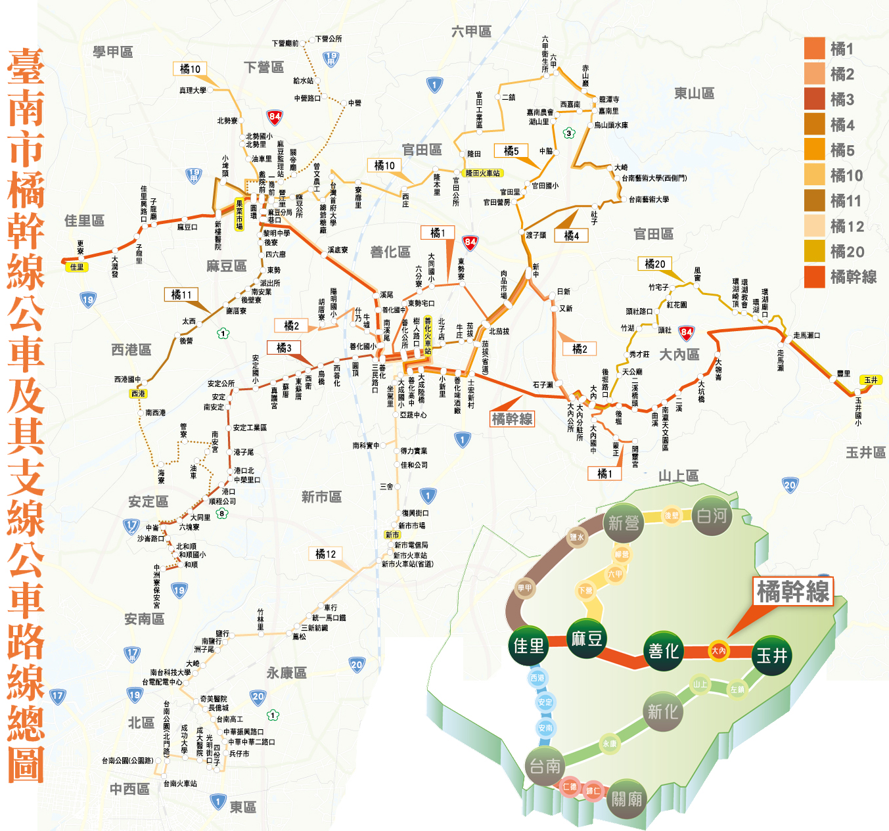

橘幹線
佳里 ─ 麻豆 ─ 善化 ─ 玉井
橘1
善化火車站 ─ 大內 ─ 蒙正
橘2
胡厝寮 ─ 善化 ─ 大內
橘3
善化火車站 ─ 安定 ─ 和順 ─ 臺南公園
橘4
善化火車站 ─ 南藝大 ─ 烏山頭水庫
橘5
善化火車站 ─ 六甲
橘10
真理大學 ─ 麻豆 ─ 官田 ─ 南藝大
橘11
下營 ─ 麻豆 ─ 西港 ─ 和順
橘12
麻豆 ─ 善化 ─ 臺南
橘20
大內公所 ─ 環湖 ─ 玉井